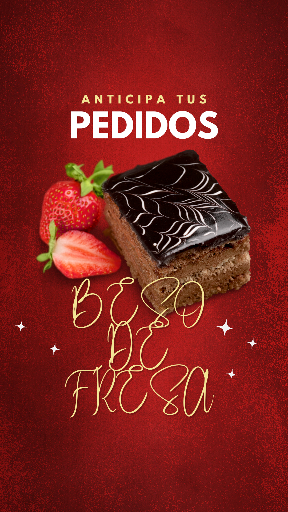
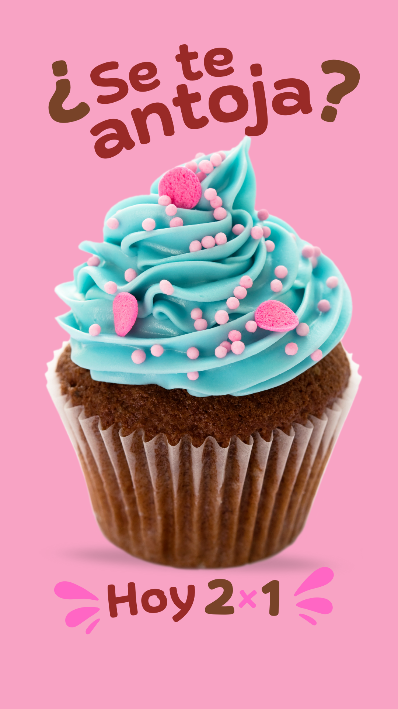

Beso de Fresa
Tu tienda de postres de fresa
Principal
Fotos
Videos
Contactos
promociones
Promociones!
 
Nuestros Artículos
Primer Artículo
Este es mi primer artículo.
Segundo Artículo
Este es mi segundo artículo.